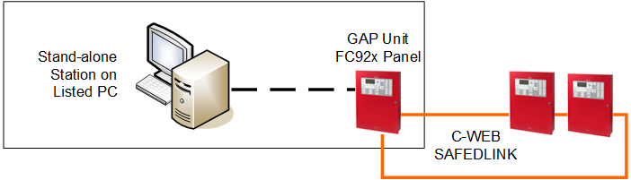
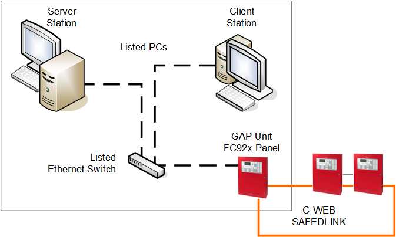
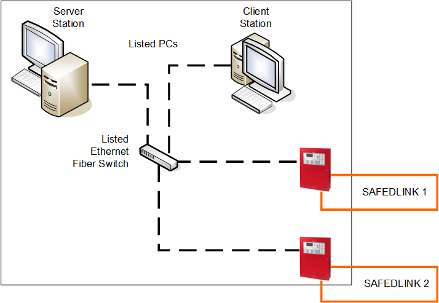
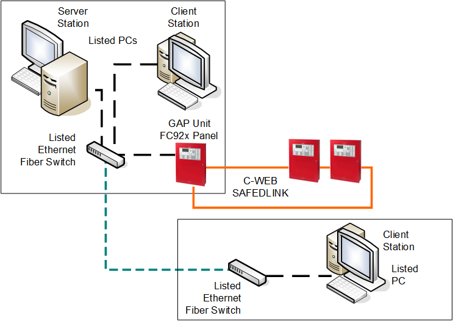
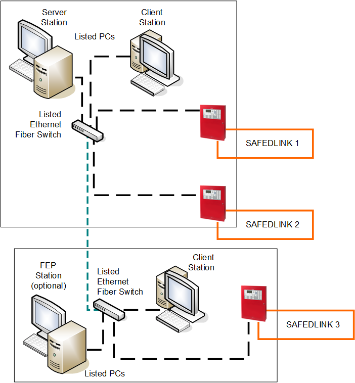
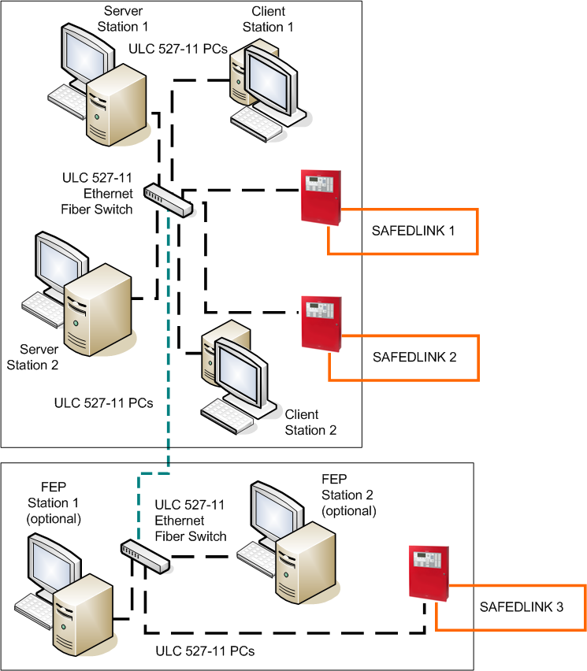
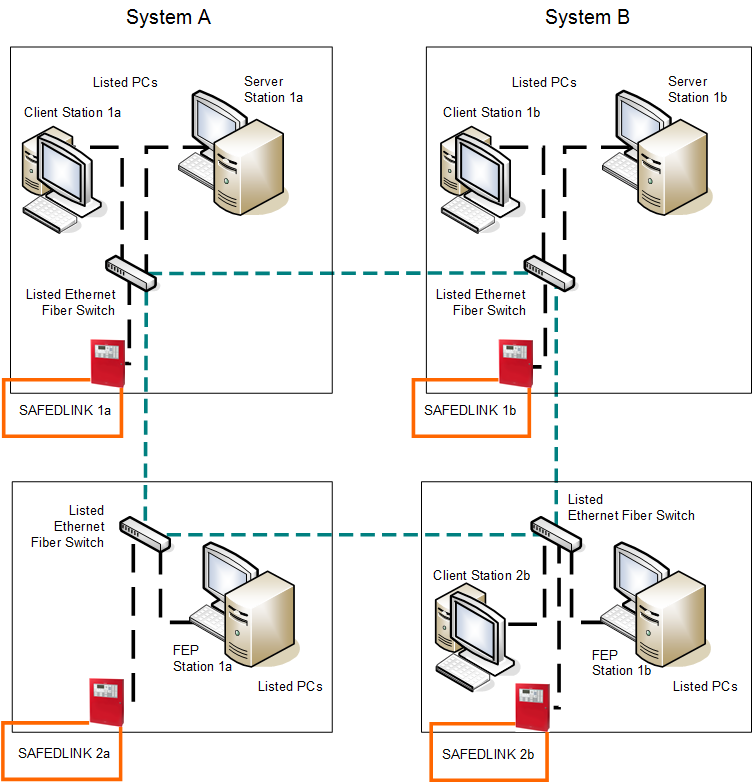

FS92 Fire System Architectures
Cerberus DMS systems for FS92 fire networks can be configured as a stand-alone management station or client/server network-distributed system.
The possible UL/ULC-complaint configurations are presented in the following examples.
NOTE: No Request/Grant/Deny (RGD) mechanism can occur to exchange control between local management stations. For each ULC-compliant fire network, the control on the fire system is assigned to the management station associated to the local control panel that has the control on the voice system.

In the following figures, the Listed PC and network devices should comply with requirements described in:
- Management Station Hardware in UL Fire Systems
- Management Station Hardware in ULC Fire Systems
- Hardware Requirements for UL Norms Compliance
- Hardware Requirements for ULC Norms Compliance
Conduits: Local connections must comply with UL 864 10th edition, and specifically to sections 50.3 exception 1 and 56.1.2 f.
Copper-based wiring must be enclosed in listed conduits within 20 ft (UL) or 18 m (ULC).
Stand-Alone Management Station Architecture
In single station systems, the C-WEB/SAFEDLINK fire network is connected to the unique Cerberus DMS station via the GAP unit.
The system station and the FC92x GAP must be within 20 ft (UL) or 18 m (ULC) of each other, and copper network cables must be mechanically protected by UL 864/ULC S527-compliant conduits.

Units installed in the same room within 20 ft (UL) or 18 m (ULC) from each other | |
Ethernet wiring within 20 ft (UL) or 18 m (ULC) in UL/ULC listed conduits |
Local Client/Server Management Station Architecture
In local client/server solutions, the same type of connection is implemented on the server station that provides communication services to client stations within the same control room.
Cerberus DMS stations, the FC92x GAP unit, and the Ethernet switch must be within 20 ft (UL) or 18 m (ULC) of each other, and copper network cables must be mechanically protected by UL 864/ULC S527-compliant conduits. A listed switch must be used.

Units installed in the same room within 20 ft (UL) or 18 m (ULC) from each other | |
Ethernet wiring within 20 ft (UL) or 18 m (ULC) in UL/ULC listed conduits |
Client/Server Management Station Architecture with Multiple Fire Networks
Client/server solutions can also support multiple fire networks connected to the server station over a local UL 864/ULC S527-compliant Ethernet Switch.
See UL/ULC Compliance: SAFEDLINK Network Limits for the maximum number of networks supported.

Units installed in the same room within 20 ft (UL) or 18 m (ULC) from each other | |
Ethernet wiring within 20 ft (UL) or 18 m (ULC) in UL/ULC listed conduits |
Wide Client/Server Management Station Architecture
Larger client/server solutions may include additional remote client stations that may be connected over local Ethernet LAN cables of fiber optic links applying a single (DCLB) or dual (DCLC) fiber connection. An appropriate listed switch must be used. As in the central location, note the rules to follow at the remote station.

Units installed in the same room within 20 ft (UL) or 18 m (ULC) from each other | |
Ethernet wiring within 20 ft (UL) or 18 m (ULC) in UL/ULC listed conduits | |
Ethernet over Fiber optic cable (Single mode or Multi mode), connected in Style4/ Class B or Style7/Class X |
Wide Client/Server Management Station Architecture with Multiple Fire Networks and FEP Station(s)
Wide client/server solutions can also support multiple C-WEB/SAFEDLINK fire networks, both local and remote. A FEP station may be required for balancing the communication workload on the server station (refer to UL/ULC Compliance: SAFEDLINK Network Limits).

Units installed in the same room within 20 ft (UL) or 18 m (ULC) from each other | |
Ethernet wiring within 20 ft (UL) or 18 m (ULC) in UL/ULC listed conduits | |
Ethernet over Fiber optic cable (Single mode or Multi mode), connected in Style4/ Class B or Style7/Class X |
Redundant Management Station Servers and FEPs Architecture
A large client/server solution can support redundant sets of stations, including dual servers and dual FEPs. While the main system has full control, the backup system runs with no control of the fire system. If the main system fails, a manual operation on all stations (user account switchover) can transfer the control to the redundant system.

Units installed in the same room within 20 ft (UL) or 18 m (ULC) from each other | |
Ethernet wiring within 20 ft (UL) or 18 m (ULC) in UL/ULC listed conduits | |
Ethernet over Fiber optic cable (Single mode or Multi mode), connected in Style4/ Class B or Style7/Class X |
Distributed Systems Architecture
Very large-size solutions may include multiple local systems in a distributed architecture. Each local system is based on a project, and multiple projects can be deployed to one or more interconnected server computers. Local system projects can include FEPs and local redundant solutions. The client stations can access data from all projects.

Units installed in the same room within 20 ft (UL) or 18 m (ULC) from each other | |
Ethernet wiring within 20 ft (UL) or 18 m (ULC) in UL/ULC listed conduits | |
Ethernet over Fiber optic cable (Single mode or Multi mode), connected in Style4/ Class B or Style7/Class X |